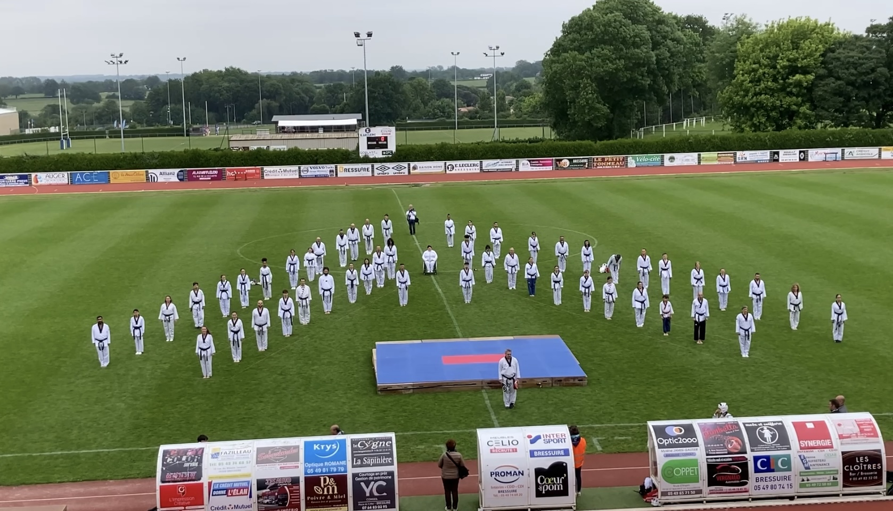

Je pratique le Taekwondo depuis l'âge de 6 ans, au club Sojjok Kwan à Niort. Il s'agit d'un art martial sud-coréen dont la création remonte aux années 1950. Cet art-martial m'a appris à avoir confiance en moi et à être plus sérieux. En juin 2022, j'ai passé un examen pour obtenir le grade de 1er Dan, le premier grade de la ceinture noire. J'ai ensuite passé le grade de 2ème Dan en avril 2024, en parallèle de mes études. J'ai l'habitude de venir aider pour les cours. Par ailleurs, j'ai participé à une démonstration olympique le 2 juin 2024, à l'occasion du passage de la flamme olympique.
J'aime beaucoup la musique et j'ai appris à jouer de la guitare. J'ai eu plusieurs écoles, dont l'École de Musique de Rue de Niort (EMR), et l'Arc Musical. À l'EMR, j'ai pu jouer dans un groupe de funk avec d'autres élèves, et nous étions encadrés par des professeurs venant tous du même groupe de musique.
Futuroscope : durant l'été 2023, j'ai eu la chance de pouvoir travailler au Futuroscope en temps que conseiller en ventes. J'avais deux postes différents. J'étais au plateau d'appels téléphoniques pour prendre les réservations de séjours des visiteurs, ainsi qu'à l'agence à l'entrée du parc, où mon travail consistait à corriger les erreurs de réservations des visiteurs. J'ai re-travaillé au Futuroscope durant les vacances de noël 2023.